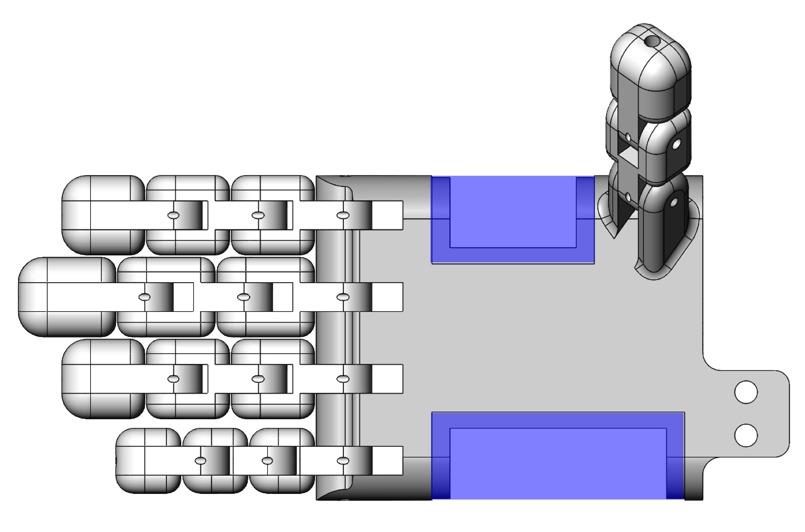
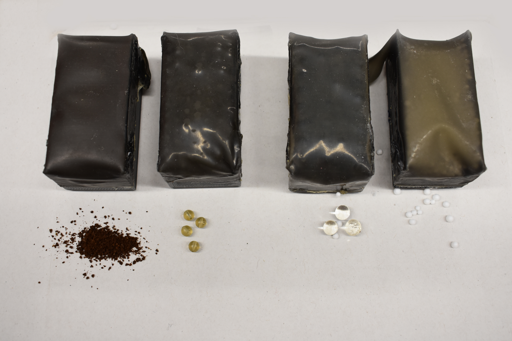
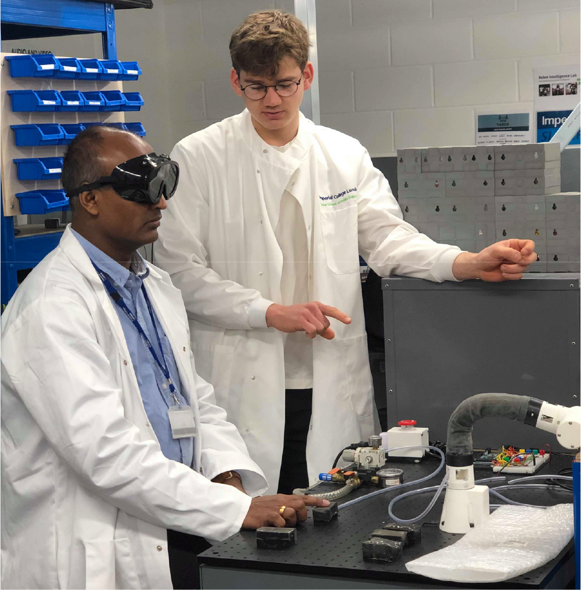
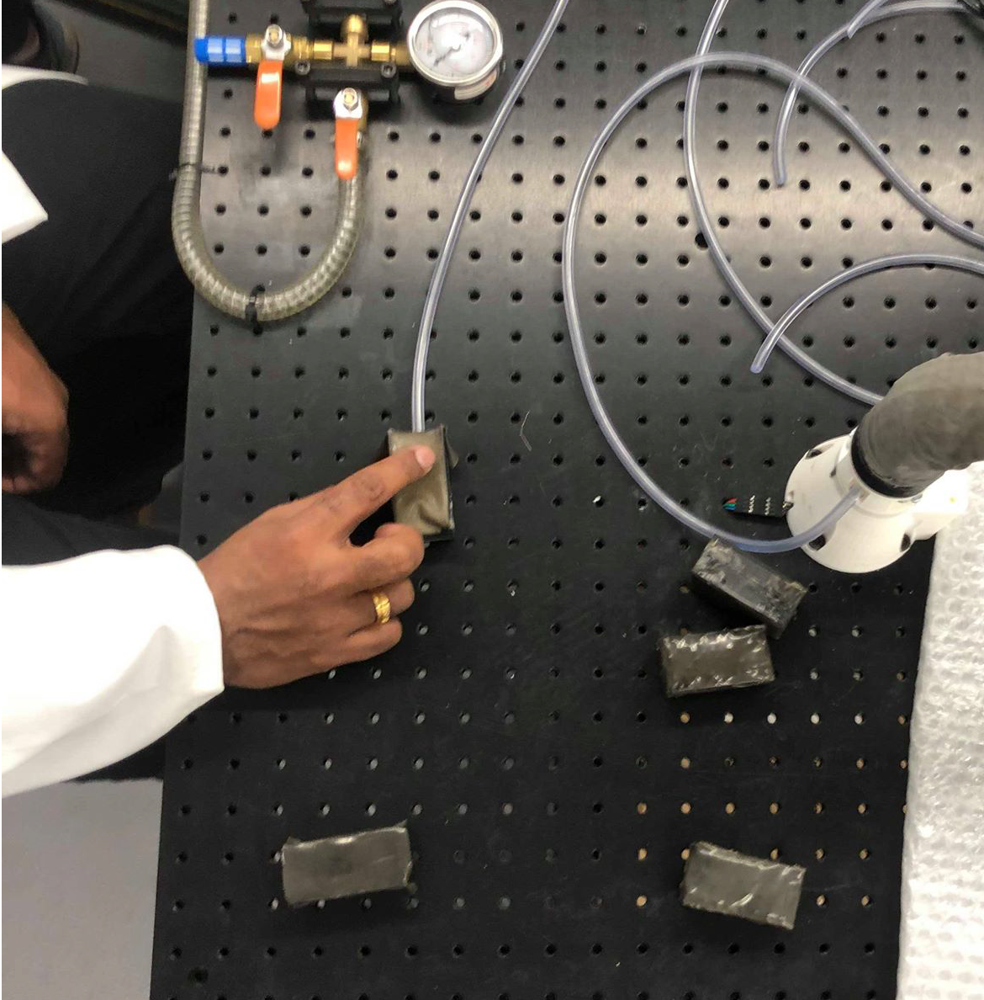
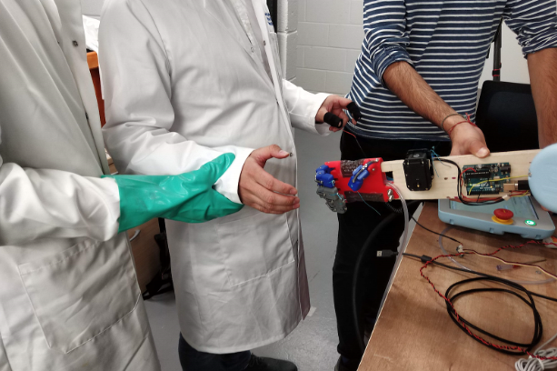

Robot Handshake
Research project: a novel robotic hand design that emulates a realistic human-robot handshake.
2019 - Co-author Sanish Mistry. Supervisors Angus Clarke and Dr. Thrishantha Nanayakkara.

The purpose of this research project was to understand robotics
research methodology; formulating a hypothesis and carrying out
experiments to create valid conclusions.
The broader topic of research is in social robotics, the intersection between
people and robots.
For a more detailed read, including the importance of this research project,
please download the full report above.
Hypothesis
A novel robot hand design will significantly improve realism and comfort during a robot-human handshake compared to a baseline robot hand.
Hand Design
The robot hand was designed to build on pre-existing research on
grip force, palm compliance, handshaking trajectory, and reaction agility.
The novel aspect of our design is the use of palm material that could emulate
the compliance and texture of the human hand.

CAD of hand design. Palm area highlighted in blue.
The hand was designed in SOLIDWORKS. The geometry of the hand was based on anthropometric data of the human hand, and designed with internal cavities to include tendons and other features.
Material Selection
The optimal material to emulate the human palm had to perform well both in compliance and surface texture.

Different materials samples. Coffee, rubber beads, hydrated Polyacrylamide balls, Polystyrene balls (left to right)
A blind experiment was set up to compare different granules. Granular jamming at different pressures was used to vary the hardness of each sample.

Experimental set-up comparing material samples.

Hydrated Polyacrylamide balls were found to be the most realistic material.
Experiment
In the final experiment the redesigned hand and a rigid design were compared to a real human handshake. Measurements of epidermal activity (EDA) and a questionnaire after the experiment were used to compare the designs for realism and comfort during the interaction.
